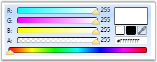
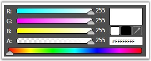
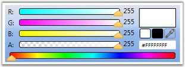
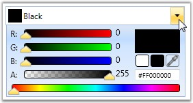
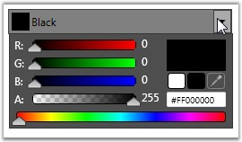
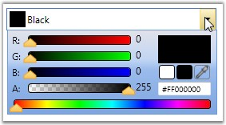
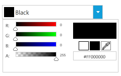

You can enhance the appearance of the ColorPicker and ColorEdit control, using the VisualStyle property. VisualStyle is an attached property, which gets or sets the value for the visual style. The various built-in visual styles are listed below.
|
Property |
Description |
|
VisualStyle |
Sets the visual style for the ColorPicker and ColorEdit controls. The options provided are as follows.
· Blend · Office2003 · Office2007Blue · Office2007Black · Office2007Silver · ShinyBlue · ShinyRed · SyncOrange · VS2010 · Metro
|
To set the visual style for the ColorPicker and ColorEdit controls, use the following code.
|
[XAML]
<!-- Adding ColorPicker --> <syncfusion:ColorPicker syncfusion:SkinStorage.VisualStyle="Office2003" Name="colorPicker"/> <!-- Adding ColorEdit --> <syncfusion:ColorEdit syncfusion:SkinStorage.VisualStyle="Office2007Blue" Name="colorEdit"/> |
|
[C#]
//Setting the visual style as Office2007Blue for ColorEdit SkinStorage.SetVisualStyle(colorEdit, "Office2007Blue");
//Setting the visual style as Office2007Blue for ColorPicker SkinStorage.SetVisualStyle(colorPicker, "Office2007Blue"); |

Figure 168: ColorEdit with Visual Style set to "Office2007Blue"

Figure 169: ColorEdit with Visual Style set to "Blend"

Figure 170: ColorEdit with Visual Style set to "Office2003"

Figure 171: ColorPicker with Visual Style set to "Office2007Blue"

Figure 172: ColorPicker with Visual Style set to "Blend"

Figure 173: ColorPicker with Visual Style set to "Office2003"

Figure 174: ColorPicker with Visual Style set to "Metro”